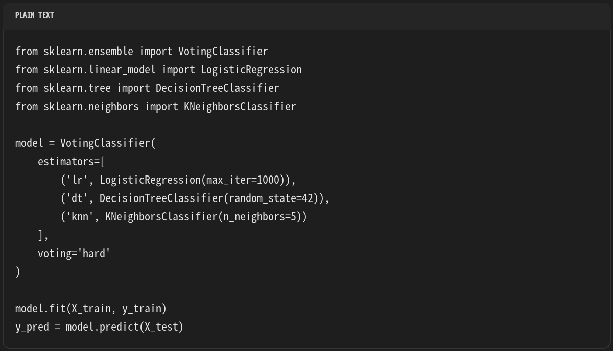
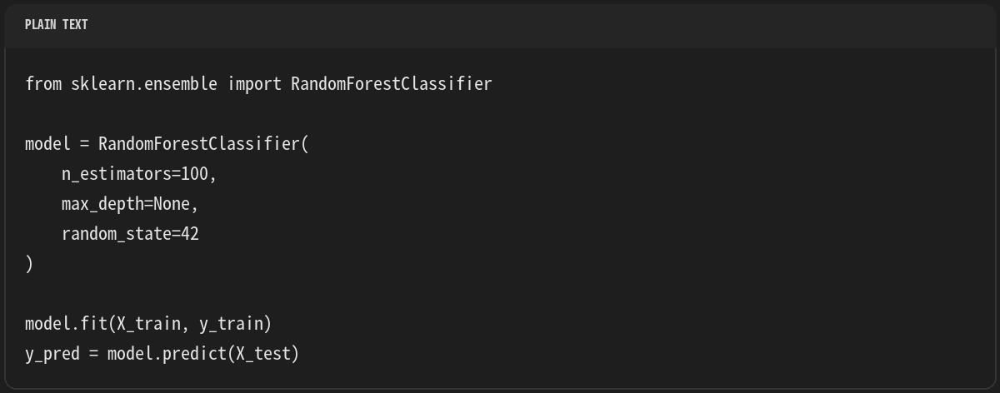
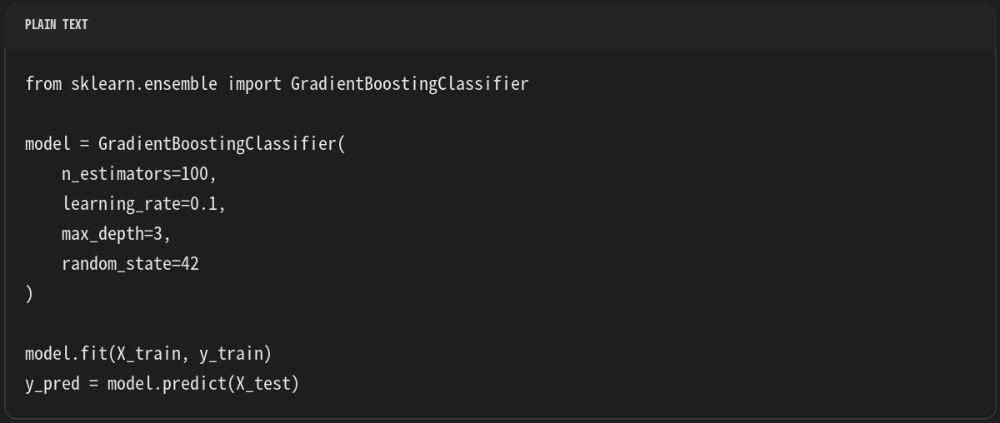
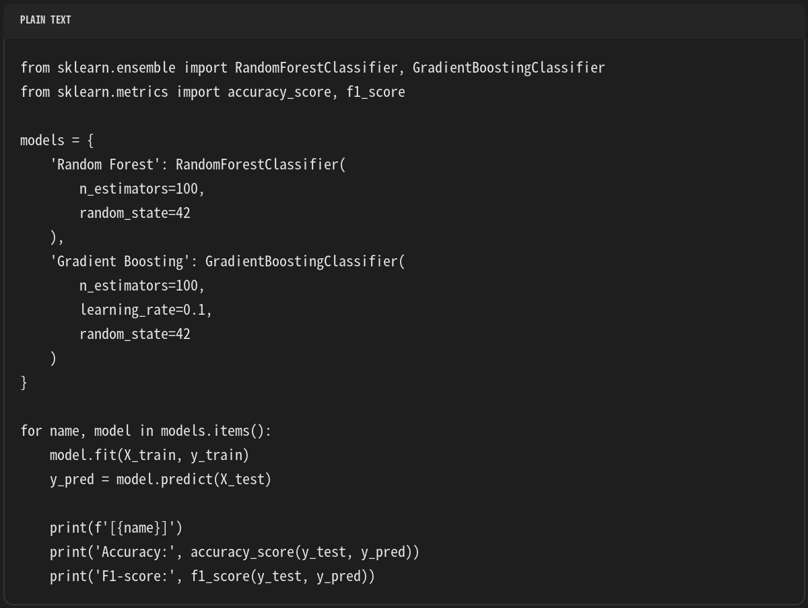

📚 3주차 Python Machine Learning
2026.10.26 Mon ~ 2026.10.30 Fri | Total: 5 days
📕 D. Ensemble, Boosting (2026.10.29 Thu)
📃 a. Ensemble (앙상블)
앙상블(Ensemble) 은 여러 머신러닝 모델의 예측을 결합하여 하나의 모델보다 더 안정적이거나 정확한 결과를 얻으려는 방법이다.
쉽게 말해, 한 사람의 판단에만 의존하지 않고 여러 사람의 의견을 종합하는 것과 비슷하다.
대표적인 앙상블 기법
| 기법 | 핵심 원리 | 대표 알고리즘 |
|---|---|---|
| Voting | 여러 모델의 예측을 투표로 결합 | VotingClassifier |
| Bagging | 여러 모델을 서로 다른 데이터 표본으로 학습 | BaggingClassifier |
| Random Forest | 여러 결정 트리를 학습하고 결과를 결합 | RandomForestClassifier |
| Boosting | 모델을 순차적으로 학습해 이전 모델의 부족한 점을 보완 | AdaBoost, Gradient Boosting, XGBoost |
1. Voting (보팅)
여러 모델의 예측을 결합한다.
- Hard Voting: 각 모델이 예측한 클래스 중 다수결로 결정
- Soft Voting: 각 모델이 예측한 클래스별 확률을 평균 내어 결정

PLAIN TEXT 코드
2. Bagging (배깅)
Bagging(Bootstrap Aggregating) 은 원본 데이터에서 복원 추출로 여러 학습용 표본을 만들고, 각 모델을 독립적으로 학습한 뒤 결과를 결합하는 방식이다.
- 여러 모델을 병렬로 학습할 수 있다.
- 모델의 예측 변동을 줄이는 데 도움이 된다.
- 결정 트리처럼 데이터 변화에 민감한 모델에 유용하다.
3. Random Forest (랜덤 포레스트)
Random Forest 는 여러 결정 트리를 학습하여 예측을 결합하는 알고리즘이다.
각 트리는 서로 다른 데이터 표본을 사용하며, 분할할 때 일부 특성만 고려해 트리 간 다양성을 높인다.
- 분류: 여러 트리의 예측을 투표로 결합
- 회귀: 여러 트리의 예측값을 평균 내는 방식이 일반적
- 단일 결정 트리보다 과적합을 줄이는 데 도움이 될 수 있다.
기본 코드

PLAIN TEXT 코드
주요 하이퍼파라미터:
| 파라미터 | 의미 |
|---|---|
n_estimators | 생성할 트리의 개수 |
max_depth | 각 트리의 최대 깊이 |
min_samples_split | 노드를 분할하는 데 필요한 최소 샘플 수 |
max_features | 노드를 분할할 때 고려할 특성의 수 또는 비율 |
📃 b. Boosting (부스팅)
부스팅(Boosting) 은 여러 약한 학습기(Weak Learner)를 순차적으로 학습하여, 이전 단계의 모델이 잘 처리하지 못한 부분을 보완하는 앙상블 기법이다.
쉽게 말해, 문제를 풀고 틀린 부분을 분석한 뒤 다음 학습기가 그 부분을 더 잘 처리하도록 학습하는 방식이다.
대표적인 부스팅 알고리즘
| 알고리즘 | 핵심 원리 |
|---|---|
| AdaBoost | 이전 단계에서 잘못 분류한 데이터에 더 큰 가중치를 부여 |
| Gradient Boosting | 손실 함수를 줄이는 방향으로 다음 모델을 학습 |
| XGBoost | Gradient Boosting을 효율적으로 구현하고 정규화 등을 지원 |
| LightGBM | 효율적인 학습과 빠른 처리를 목표로 설계된 부스팅 프레임워크 |
| CatBoost | 범주형 특성 처리를 지원하며 다양한 데이터에서 활용되는 부스팅 프레임워크 |
배깅과 부스팅의 차이
| 구분 | Bagging | Boosting |
|---|---|---|
| 학습 방식 | 여러 모델을 독립적으로 학습 | 모델을 순차적으로 학습 |
| 핵심 목적 | 예측 변동 감소 | 이전 모델의 부족한 점 보완 |
| 대표 알고리즘 | Random Forest | AdaBoost, Gradient Boosting, XGBoost |
| 병렬 처리 | 모델 간 병렬 학습이 비교적 쉬움 | 단계 간 의존성 때문에 기본적으로 순차 학습 |
Gradient Boosting 기본 코드

PLAIN TEXT 코드
주요 하이퍼파라미터:
n_estimators: 학습할 약한 학습기의 개수learning_rate: 각 학습기가 최종 예측에 기여하는 정도max_depth: 개별 트리의 최대 깊이
주의사항
learning_rate를 낮추면 충분한 성능을 얻기 위해 더 많은 학습기가 필요할 수 있다.- 학습기가 너무 많거나 트리가 지나치게 복잡하면 과적합이 발생할 수 있다.
- 최적 설정은 데이터와 평가 지표에 따라 달라진다.
📃 c. Project (프로젝트)
여러 앙상블 모델을 학습하고 성능을 비교하는 프로젝트이다.
기본 진행 순서
- 데이터 불러오기 및 구조 확인
- 결측치와 이상치 처리
- 입력 특성
X와 타깃y분리 - 학습 데이터와 테스트 데이터 분리
- Random Forest 모델 학습
- Gradient Boosting 모델 학습
- Accuracy, Precision, Recall, F1-score 등으로 평가
- 모델별 성능 비교
- 필요하면 하이퍼파라미터 튜닝
모델 비교 코드

PLAIN TEXT 코드
※ 위 코드는 이진 분류를 기준으로 한다. 다중 클래스 분류에서는 f1_score()의 average 옵션을 데이터에 맞게 지정해야 한다.
프로젝트에서 확인할 점
- 어떤 모델이 가장 높은 평가 점수를 얻었는가?
- 학습 데이터와 테스트 데이터의 성능 차이가 큰가?
- 모델의 성능과 학습 시간을 함께 고려했는가?
- 클래스 불균형이 있다면 Accuracy 외에 F1-score나 Recall도 확인했는가?
✅ 핵심 요약
- Ensemble: 여러 모델의 예측을 결합하는 방법이다.
- Voting: 여러 모델의 예측을 투표나 확률 결합으로 종합한다.
- Bagging: 여러 모델을 독립적으로 학습하고 결과를 결합한다.
- Random Forest: 여러 결정 트리를 결합한 대표적인 배깅 계열 알고리즘이다.
- Boosting: 모델을 순차적으로 학습하며 이전 모델의 부족한 점을 보완한다.
- Gradient Boosting, XGBoost, LightGBM, CatBoost 는 대표적인 부스팅 계열 알고리즘이다.
- 모델의 성능은 데이터와 평가 지표에 따라 달라지므로 직접 비교해야 한다.
🎯 학습 목표: Random Forest와 Gradient Boosting의 차이를 이해하고, 여러 앙상블 모델을 학습해 평가 지표로 성능을 비교할 수 있다.